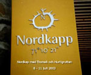
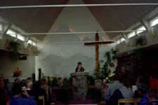
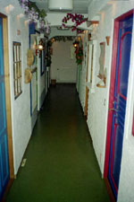
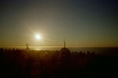
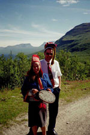

Nordkap
en reseberättelse av Kjell &
Anita Söderström

[Klicka
på bilden för att förstora]
Denna rundresa på Nordkalotten med dess
vilda natur, samernas rike och
midnattssolens glödande land började med tåg från Gävle söndag kväll
med
resmål Kiruna dit vi anlände måndag förmiddag.
Namnet Kiruna är egentligen ett samiskt
ord och uttalas Giron som betyder
fjällripa.
Första dagens resa med buss gick, efter
en rundtur i Kiruna, till Enontekiö i
Finland via
Vittangi, Karesuando. Genom bussfönstret
sågs en Ockelboskoter på ett tak
tillhörande en skoterklubb i Vittangi, en häftig upplevelse (skall försöka
ordna
ett foto) första dagen på bussresan. I Övre Soppero kom nästa aha
upplevelse
i en frikyrklig församling som på gemenskapens grund skapat en
fantastisk
kyrksal med angränsande serveringslokal. Inte att förglömma de
uthyrnings-
/övernattningsrum som var belägen en trappa ner. Det var inte en vanlig
hotellkorridor utan en småstadsgatuidyll med förstukvistar och fönster.
 [Klicka på bilden för att förstora] |
 [Klicka på bilden för att förstora] |
Dag två går färden via Karasjokk till
Nordkap, en resa så långt norrut det är
möjligt.
Resan går över
"Finnmarksvidda" där vår reseledare Marlene berättar på
ett
engagerande och personligt sätt om bl a Samekulturen. Från Kåfjord
genom en
nästan 7 km lång tunnel (ca 200 m under vatten) kommer vi fram till
Honningsvåg och till Nordkapsklippan som har en nivåskillnad -
klippstup -
på 307 m rakt ner i Norra Ishavet.
Vårt besök var natten mellan 8-9 juli
med strålande sol från en molnfri blågrön
himmel
En fantastisk upplevelse.

[Klicka
på bilden för att förstora]
Den tredje dagen började med
"Hurtigrutten" en fjordresa till världens
nordligaste stad Hammerfest.
Dagens etapp avslutas i Gildetun där övernattningen
sker på sluttningen till
Kvaenangsfjället, 412 möh med underbar utsikt över Ishavet. Tidsmässigt
blir
denna dag, den fjärde, den kortaste i bussen men efter två färjeöverfarter
så
har vi nått Tromsö "Porten till Ishavet".
Vi tar farvär av Tromsö inför den
avslutande etappen till Kiruna via Riksgränsen
och Abisko med den i särklass mest avbildade motivet i fjällvärlden nämligen
Lapporten.
Under resan där ca 300 mil har färdats
på långa raksträckor med även många
slingrande vägar där bergvägg fanns på ena sidan och stup på den
andra så
har vi utan darr i ögat sett många vackra /storslagna vyer där Michael
rattat
bussen med säker hand.

Reseledare och chaufför
[Klicka
på bilden
för att förstora]
Nattåg mot Gävle och åter i Ockelbo lördag fm med många upplevelser rikare.
Anita o Kjell Söderström
Researrangör: LuleBuss Buss- & tågresor